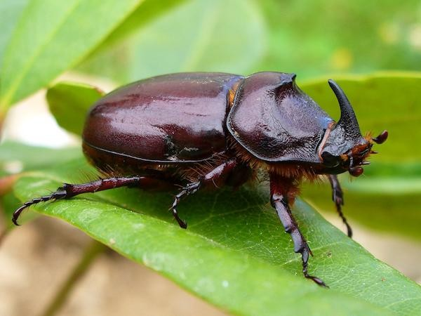

INSECT-HOUSE
Insect houses, also known as butterfly houses or bug, bee, or insect hotels, are fabricated structures that provide shelter, overwintering, and nesting sites for beneficial insects. These structures are typically wooden and are installed in gardens.
WHERE WILL YOU FIND THEM?
Find the insect-house at next to the amphitheatre